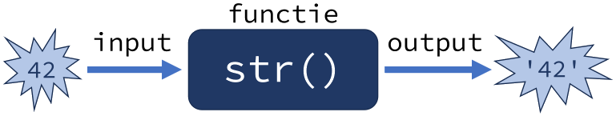
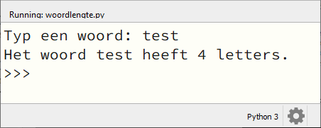
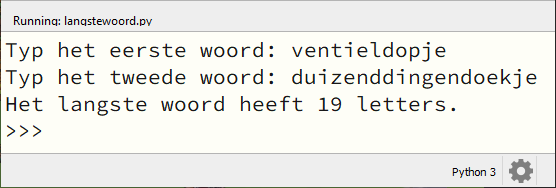
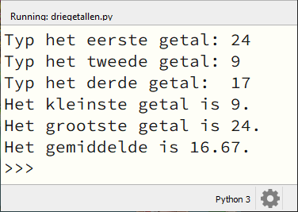
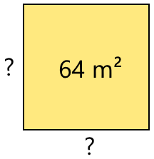
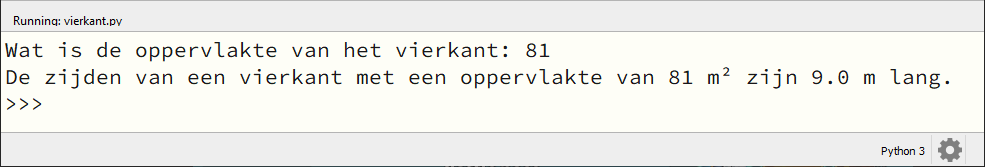

9. Functiebeginselen#
Je hebt inmiddels kennisgemaakt met de functies print(), input(), type(), int(), float() en str(). Dit zestal vormt slechts het topje van de spreekwoordelijke ijsberg. Python telt bijna zeventig standaard ingebouwde functies, en daarnaast nog duizenden (misschien zelfs miljoenen) andere functies die je kunt gebruiken. Functies zijn, net als variabelen, belangrijke bouwstenen voor een computerprogramma. Hoog tijd dus om er wat dieper op in te gaan.
Wat leer je in dit hoofdstuk
Wat bedoelen we met een functie als black box.
Wat bedoelen we met de parameters van een functie.
Wat bedoelen we met de returnwaarde van een functie.
Wat doen de functies
min(),max(),round()enlen().Wat bedoelen we met een module.
Hoe importeer je een module in je programma.
Hoe roep je een functie aan uit een module.
Wat doen de functies
math.sqrt()enrandom.randint().
9.1. Onderdelen van een functie#
Wanneer je in Python print('Hello, World!') aanroept, wordt op de achtergrond een stuk code uitgevoerd waardoor de tekst Hello, World! op het scherm verschijnt. Die code is geprogrammeerd door de makers van Python. Een functie is dan ook eigenlijk een blok code dat je kunt laten uitvoeren wanneer je het nodig hebt. Om dat voor elkaar te krijgen moet je drie dingen weten:
De naam van de functie.
De eventuele parameters die de functie nodig heeft (de input).
De eventuele waarde die de functie teruggeeft (de output).
Je zou een functie enigszins kunnen vergelijken met een recept in een kookboek. Wanneer je een appeltaart wilt bakken, gebruik je het recept Appeltaart. De ingrediënten voor de taart zijn de input en de output is een overheerlijke versgebakken appeltaart.
Functie |
Recept |
|
|---|---|---|
Naam |
|
|
Input |
een waarde, bijvoorbeeld |
ingrediënten |
Output |
de |
een taart |
Meestal verbeelden we een functie als een black box of een machientje waar je input in kunt stoppen en waar output uit komt:

9.1.1. Naam#
Net als variabelen hebben functies een naam. En net als bij variabelen mag die naam slechts bestaan uit letters, cijfers en underscores, en mag hij niet met een cijfer beginnen. Zoals het handig is om voor variabelen namen te gebruiken die iets zeggen over de inhoud van de variabele, hebben functies een naam die aangeeft wat de functie doet.
9.1.2. Parameters#
Aan de meeste functies kun je input meegeven in de vorm van zogenoemde parameters. Dat zijn waarden die je aan de functie meegeeft om te verwerken. De parameterwaarden zet je tussen de haakjes bij de functieaanroep. Bijvoorbeeld de functie int() roep je aan met één parameter, namelijk de waarde waarvan de functie probeert een integer versie te maken.
>>> int('21')
21
De functie max(), die het grootste getal in een reeks teruggeeft, kun je aanroepen met twee parameters…
>>> max(3, 5)
5
…maar ook met meer parameters:
>>> max(3, 5, 2, 8, 1, 6)
8
Over het algemeen kan een functie de waarden van de parameters niet wijzigen. Wanneer je bijvoorbeeld aan de functie int() een stringvariabele meegeeft, blijft dat een stringvariabele:
>>> a = '21'
>>> int(a)
21
>>> a
'21'
De aanroep int(a) in het voorbeeld hierboven heeft de integer 21 teruggegeven, maar de variabele a bevat nog steeds de stringwaarde '21'. Als je wilt dat a de integerwaarde 21 krijgt, zou je het resultaat van int(a) weer moeten opslaan in a met een assignment statement:
>>> a = '21'
>>> a = int(a)
>>> a
21
9.1.3. Returnwaarde#
De output van een functie wordt vaak de returnwaarde of retourwaarde genoemd. Bijvoorbeeld de functie int() retourneert een integer versie van de inputwaarde. Zoals je in het laatste voorbeeld hierboven zag, kun je die returnwaarde weer in een variabele stoppen met een assignment statement. Maar je kunt de waarde ook op een andere manier gebruiken, bijvoorbeeld in een berekening of in een print() aanroep.
>>> a = '21'
>>> b = int(a) // 7
>>> print(b * int(4.75))
12
Niet alle functies retourneren een waarde. Bijvoorbeeld print() drukt tekst af op het scherm, maar geeft geen waarde terug. Dat kun je als volgt checken:
>>> a = print('Hello, World!')
Hello, World!
>>> print(a)
None
In dit voorbeeld wordt de returnwaarde van print('Hello, World!') opgeslagen in a. Wanneer we vervolgens print(a) aanroepen om de waarde van a te tonen, wordt None afgedrukt. Dit is een van de Python keywords die je eerder tegenkwam in het hoofdstuk Variabelen. Het geeft aan dat a geen waarde heeft.
9.2. Ingebouwde functies#
Zoals gezegd kent Python een kleine zeventig ingebouwde functies. De werking van print(), input(), type(), int(), float() en str() ken je inmiddels, maar hieronder volgen er nog enkele die je vaak van pas kunnen komen.
- min()#
Retourneert de kleinste waarde uit een reeks waarden. Als de waarden strings zijn, wordt gekeken naar de alfabetische volgorde.
- Parameters:
Één of meerdere waarden.
- Returnwaarde:
De kleinste waarde.
- Voorbeelden:
- max()#
Retourneert de grootste waarde uit een reeks waarden. Als de waarden strings zijn, wordt gekeken naar de alfabetische volgorde.
- Parameters:
Één of meerdere waarden.
- Returnwaarde:
De grootste waarde.
- Voorbeelden:
- round()#
Rondt een getal af op een gegeven aantal cijfers achter de komma.
- Parameters:
Een getal en (eventueel) het aantal decimalen waarop moet worden afgerond. Als je geen aantal decimalen meegeeft, wordt afgerond op gehelen.
- Returnwaarde:
De afgeronde versie van het getal.
- Voorbeelden:
- len()#
Retourneert het aantal karakters in een string.
- Parameters:
Een stringwaarde. Later zul je zien dat
len()ook met andere datatypes overweg kan, maar vooralsnog gebruiken we deze functie alleen voor strings.- Returnwaarde:
Het aantal karakters in de string.
- Voorbeelden:
9.3. Modules#
Naast de standaard in Python ingebouwde functies zijn er nog vele andere functies die je in je programma’s kunt gebruiken. Deze functies bevinden zich in zogenoemde modules. Een module is een Python codebestand met een verzameling functies die passen bij een bepaald onderwerp. Zo bevat de math module allerlei wiskundige functies en de random module allerlei functies voor het genereren van willekeurige getallen.
Om de functies uit een module te kunnen gebruiken, moet je twee dingen doen:
Boven in je programma moet je de module importeren. Dat doe je met de code
import <modulenaam>.De functieaanroep moet je vooraf laten gaan door de naam van de module en een punt.
Laten we bijvoorbeeld de math module eens importeren en de math.sqrt() functie aanroepen, waarmee je de wortel uit een getal kunt trekken:
import math
print(math.sqrt(9))
De output van deze code is:
3.0
En dit klopt, want \(\sqrt{9}=3\).
Wat is worteltrekken?
Om te begrijpen wat worteltrekken is, moet je eerst weten wat we bedoelen met kwadrateren. Kwadrateren betekent ‘tot de macht 2 verheffen’, oftewel ‘vermenigvuldigen met zichzelf’:
\(1^{2} = 1 \times 1 = 1\)
\(2^{2} = 2 \times 2 = 4\)
\(3^{2} = 3 \times 3 = 9\)
\(4^{2} = 4 \times 4 = 16\)
\(5^{2} = 5 \times 5 = 25\)
…enzovoort.
Worteltrekken is het omgekeerde van kwadrateren. We gebruiken hiervoor het \(\sqrt{\text{ }}\) symbool:
\(\sqrt{1} = 1 \text{ want } 1^{2} = 1\)
\(\sqrt{4} = 2 \text{ want } 2^{2} = 4\)
\(\sqrt{9} = 3 \text{ want } 3^{2} = 9\)
\(\sqrt{16} = 4 \text{ want } 4^{2} = 16\)
\(\sqrt{25} = 5 \text{ want } 5^{2} = 25\)
…enzovoort.
Wellicht vraag je je na het zien van bovenstaand rijtje af of bijvoorbeeld \(\sqrt{2}\) en \(\sqrt{3}\) ook bestaan. Dat kun je uiteraard zelf uitproberen in Python met de code print(math.sqrt(2)) en print(math.sqrt(3)). Je ziet dan dat deze wortels inderdaad bestaan, maar geen mooie ronde getallen zijn:
\(\sqrt{2} \approx 1.4142135623730951 \text{ want } 1.4142135623730951^{2} \approx 2\)
\(\sqrt{3} \approx 1.7320508075688772 \text{ want } 1.7320508075688772^{2} \approx 3\)
Het symbool \(\approx\) betekent ‘is ongeveer gelijk aan’.
De wortels in de voorgaande voorbeelden worden ook wel vierkantswortels genoemd. In het Engels is een vierkantswortel een square root. Nu begrijp je ook waarom de functie math.sqrt() heet.
Met name bij het programmeren van games heb je vaak random getallen nodig. De random module biedt hiervoor bijvoorbeeld de functie random.randint().
- random.randint(a, b)#
Retourneert een willekeurig geheel getal (een random integer) tussen de grenzen
aenb.- Parameters:
Twee integers
aenb.- Returnwaarde:
Een willekeurige integer die minstens
ais en hoogstensb.- Voorbeelden:
Wanneer je in een game de speler bijvoorbeeld met een dobbelsteen wilt laten gooien, kun je random.randint(1, 6) gebruiken.
9.4. Opdrachten#
Opdracht 01
Maak in Mu editor een nieuw codebestand en sla het op onder de naam woordlengte.py. Schrijf hierin een programma dat de gebruiker om een woord vraagt en vervolgens toont hoeveel letters dat woord bevat.

Opdracht 02
Maak in Mu editor een nieuw codebestand en sla het op onder de naam langstewoord.py. Kopieer de onderstaande code naar het bestand:
1# Functiebeginselen - opdracht 02
2
3woord1 = input('Typ het eerste woord: ')
4woord2 = input('Typ het tweede woord: ')
Voeg code toe zodat het programma toont hoeveel letters het langste woord bevat.

Opdracht 03
Maak in Mu editor een nieuw codebestand en sla het op onder de naam driegetallen.py. Schrijf hierin een programma dat de gebruiker om drie (gehele) getallen vraagt en vervolgens toont:
wat het kleinste getal is;
wat het grootste getal is;
wat het gemiddelde van de drie getallen is, afgerond op 2 decimalen.

Denk eraan dat de functie input() altijd een string retourneert. Je hebt hier dus type casting nodig om getalswaarden te verkrijgen waarmee Python kan rekenen.
Opdracht 04
Een vierkant is een rechthoek met vier gelijke zijden. De oppervlakte van een vierkant bereken je met de formule
Wanneer de oppervlakte van een vierkant bekend is, kun je terugrekenen hoe lang de zijden moeten zijn. Dat doe je met worteltrekken.

Maak in Mu editor een nieuw codebestand en sla het op onder de naam vierkant.py. Schrijf hierin een programma dat de gebruiker om de oppervlakte van een vierkant vraagt en vervolgens de lengte van de zijden toont, afgerond op 1 decimaal:
